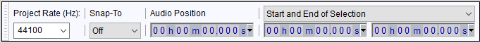

Recording with USB turntables or USB cassette decks
Audacity is often included with USB turntables, USB cassette decks or USB soundcards, and is suitable for recording from any USB audio device using the instructions on this page.
USB audio devices connect to the computer's USB port and are used to transfer records, or tapes, to digital audio files (from which audio CDs can be burnt). This is very useful if your computer does not have the necessary line-in port for digitizing LPs or cassettes with a conventional turntable or tape deck. USB turntables often include a line input to which standard tape decks or similar sources can be connected for transfer to the computer.
Please see the Audacity Wiki page on USB Turntables for a fuller discussion of the operation of these devices.
Some users with extensive experience of digitizing LPs and tapes believe that connecting a good quality conventional turntable or tape deck to an external USB interface or soundcard is an ideal solution. USB soundcards usually do not suffer from the transmission problems of USB turntables or tape decks, and are also free from the random clicky noise that can afflict sound devices built into computer motherboards. Moreover their analog-to-digital converter (ADC) may be superior to that provided with a USB turntable
Ensure the Audacity software is up to date
Make sure you have the current version of Audacity as the software provided on the device manufacturer's CD can be out-of-date. Note that neither the version number of the CD nor that of any guides produced by the manufacturers necessarily relates to the Audacity version number. To check your current version of Audacity, choose in the menu (or on Mac). Then go to the Audacity download site and, if needed, download the latest Audacity for your operating system.
Manufacturer's guides
The guides provided with the devices might be confusing, they are written by the device manufacturer rather than by Audacity. Sometimes the guides supplied with the devices are out-of-date or have errors. Here are some errors that you may come across:
- Many manuals state that you should "select stereo mix for your input". This is not the case, rather you should be setting the USB device as your input.
- Audacity Preferences are not under the menu, as many manuals state, except in the legacy 1.0.0 version of Audacity which is only appropriate for Mac OS 9 and Windows 95. Preferences are under the menu, or under the menu on Mac.
- You do not need to select each time you launch Audacity, as some manuals urge you to. Monitoring the input is optional and allows you to hear the device through the computer speakers just like an ordinary turntable, or cassette deck, whenever it's playing, without having to record. If you want to select , you need to have the Recording Meter enabled (note: NOT the Mixer Toolbar that some guides state). Instructions on this are below.
Set up Audacity to record from the USB audio device
Connect the USB device
Connect the USB cable of the device to the computer. Connect to an empty USB port on the computer, not to a USB hub (a device that allows multiple USB devices to be connected to one of your computer's USB ports).
Windows:
- By the system clock, right-click over the then right-click over .
- On the Advanced tab, in the "Default Format" section, make sure the dropdown menu is set to "2 channel 16-bit 44100 Hz".
Mac:
- From select "Sound" and click on the Input tab
- Select "USB Audio CODEC" or similar as the input device and verify the Recording Meter shows input.
- If the recording meter in the Sound preferences panel does not show input:
- From the Finder, select and open Audio MIDI Setup.
- If the Audio Devices window is not visible, select .
- Select your USB input device in the list in the left pane of the Audio Devices window.
- Set the Format to "44100.0 Hz" and "2ch-16bit".
- For a more detailed walk-through of the above steps for Mac, see Mac and USB input devices on the Audacity Wiki.
Launch Audacity
If Audacity was already running when you connected the cable, restart Audacity or choose .
Project Rate
Set the Audacity Project Rate in Selection Toolbar at the bottom left of the Audacity screen to 44100 Hz:
- 
Devices
Use Device Toolbar to set the recording and playback devices and to set the recording channels to "2 (Stereo) Recording Channels", as in the below example on Windows 10:
- The Recording Device is set to the USB device (in this case the device name, but often called or including the phrase "USB Audio CODEC").
- Recording Channels is set to stereo.
- The Playback Device is set to the named speakers of the built-in computer sound device.
- These settings can also be changed in Devices Preferences.
Software Playthrough
Use and click "Software Playthrough" to turn it "on" (the checkmark is shown when it is "on"). This setting can also be enabled or disabled in Recording Preferences. Software Playthrough lets you hear the turntable through the computer speakers when recording. It also lets you hear the turntable without recording if you turn on monitoring (see the next section below).
If Audacity's Software Playthrough does not produce audio on Mac, try the third-party LineIn application.
Monitoring
Enable monitoring to set the recording level
- Turn monitoring on by clicking once on the microphone icon in the Recording Meter.
- In Mixer Toolbar, turn up the left-hand playback volume slider (by the speaker icon).
- The right-hand recording volume slider (by the microphone icon) can often be used to vary the loudness of the recording, but it may not function with all turntables. If it does not, try adjusting the output level on the turntable (often, there is a gain control under the chassis).
Alternatively, you may be able to adjust the input level on Windows and Linux only, usually by looking for the speaker icon by the system clock. On Windows, . Then right-click over USB Audio Codec, choose "Properties" and click the Levels tab.
- Try to aim for a maximum peak of around –6 dB, which corresponds to around 0.5 on the waveform. You can always boost the level later with or after you have completed editing.
- If the device has RCA leads for connecting to speakers and your computer has a line-in port (blue), plug the RCA leads into an RCA stereo > 1/8 inch stereo TRS adapter (obtainable from most electronics retailers), then connect the adapter to the line-in. Set Audacity to record from line-in then you can use the Audacity recording slider to control the level.
- If you have no line-in, do not use the microphone (pink) input unless there is a way to switch it to line-level stereo or unless it offers line-level stereo compatibility.
- If the cartridge is replaceable, take it to a hi-fi shop and see if you can get a lower output cartridge. If the cartridge is ceramic (cheap USB turntables often use these) it will have a high output. Replacing this with a magnetic cartridge will give lower output and better quality.
Recording
Then, ignoring any instructions in the manufacturer's guide to select "stereo mix", simply press the Record button  in Transport Toolbar to start recording from the turntable.
in Transport Toolbar to start recording from the turntable.
Recording, editing and exporting
Once your USB turntable or cassette deck is set up and working properly, go to the Basic Recording, Editing and Exporting section of our Tutorial - Copying tapes, LPs or MiniDiscs to CD for instructions on how to:
- make and edit your recording
- export it to an audio file
- import it to iTunes or Windows Media Player
- burn it to CD
Troubleshooting
The following potential problems during recording are discussed in detail in the Audacity Wiki - see: Troubleshooting
- Turntable not recognised by operating system
- No sound in other Windows applications after connecting the turntable
- White Noise
- No signal in one stereo channel
- Recordings freeze up or have dropouts
- Speed too fast or slow or erratic
- Recordings too loud or soft